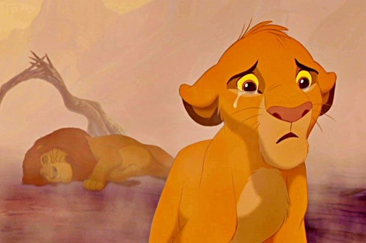
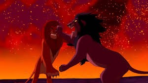

Date de sortie : 1994
Durée : 89min
Pays d’origine : Etats-Unis
Réalisateur : Roger ALLERS,
Rob MINKOFF
Production : Walt Disney
C'est l'histoire de Simba, un jeune lionceau insouciant et turbulent qui est destiné à succéder à son père Mufasa, le très respecté roi des hautes terres d'Afrique. Mais c'est sans compter Scar, son oncle. Jaloux de son frère Mufasa, il a toujours rêvé de prendre le pouvoir. Alors qu'il va tendre un piège à Simba pour se débarrasser de lui, c'est Mufasa qui va perdre la vie en essayant de sauver son fils. Croyant que son père est mort par sa faute, Simba, rongé par le remords va quitter le village. Perdu et isolé des siens, le jeune lion va faire la connaissance de Timon et Pumbaa, avec qui il va grandir. Ces drôles de compagnons vont lui apprendre à voir la vie du bon côté. Mais parvenu à l'âge adulte, il devra trouver la force de revenir pour sauver son royaume des mains de Scar.
La mort de mufasa :
Combat final entre Simba et Scar :
Vous pouvez avoir un aperçu de ce film d'animation en cliquant ici
Ratatouille L'Âge de glace